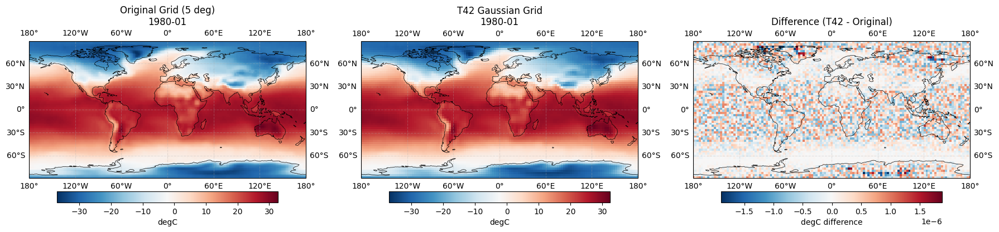
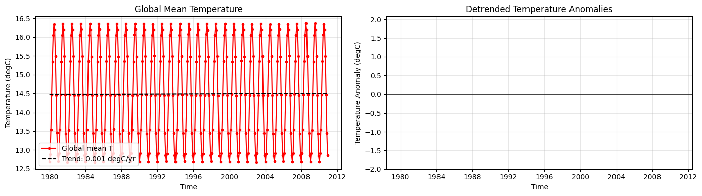
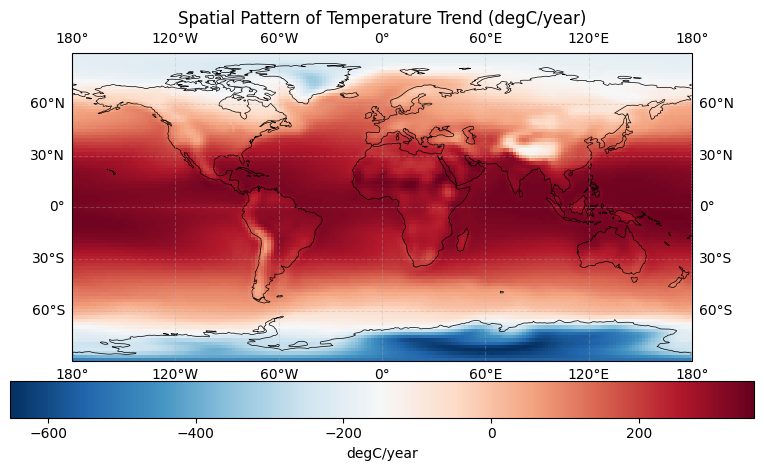

Python + CDO Workflow#
Integrating CDO into Python Data Pipelines#
This notebook demonstrates a complete workflow combining CDO and Python. CDO handles data processing and grid operations while Python provides analysis and visualization. We use subprocess calls to CDO and xarray for reading results.
Learning Objectives:#
Build a complete CDO processing chain using pipes
Call CDO from Python subprocesses effectively
Read CDO output with xarray for further analysis
Create a full raw data to visualization pipeline
import subprocess
import xarray as xr
import numpy as np
import matplotlib.pyplot as plt
import cartopy.crs as ccrs
import cartopy.feature as cfeature
import os
import tempfile
# CDO is installed as cdo.cmd on Windows; use the right executable name.
CDO = 'cdo.cmd' if os.name == 'nt' else 'cdo'
# Use real NCEP/DOE Reanalysis-2 global monthly temperature data
data_dir = '../data'
output_dir = '../output'
os.makedirs(data_dir, exist_ok=True)
os.makedirs(output_dir, exist_ok=True)
real_file = os.path.join('..', 'datasets', 'tas_sample.nc')
ds_real = xr.open_dataset(real_file)
ds = ds_real.rename({'tas': 'temp'})
ds['temp'] = ds['temp'] - 273.15 # K -> degC
ds.attrs = {'title': 'Real NCEP/DOE Reanalysis-2 monthly temperature',
'source': 'NCEP/DOE Reanalysis-2 (tas_sample.nc)'}
lon = ds.lon.values
lat = ds.lat.values
input_file = os.path.join(data_dir, 'global_monthly.nc')
ds.to_netcdf(input_file)
print(f'Using real dataset: {real_file}')
print(f'Saved working copy: {input_file}')
print(ds)
C:\Users\birhe\AppData\Roaming\Python\Python312\site-packages\xarray\backends\plugins.py:110: RuntimeWarning: Engine 'xrspatial' loading failed:
Numba needs NumPy 2.4 or less. Got NumPy 2.5.
external_backend_entrypoints = backends_dict_from_pkg(entrypoints_unique)
Using real dataset: ..\datasets\tas_sample.nc
Saved working copy: ../data\global_monthly.nc
<xarray.Dataset> Size: 27MB
Dimensions: (time: 372, lat: 94, lon: 192)
Coordinates:
* time (time) datetime64[ns] 3kB 1980-01-01 1980-02-01 ... 2010-12-01
* lat (lat) float64 752B 88.54 86.65 84.75 82.85 ... -84.75 -86.65 -88.54
* lon (lon) float64 2kB 0.0 1.875 3.75 5.625 ... 352.5 354.4 356.2 358.1
Data variables:
temp (time, lat, lon) float32 27MB -27.97 -27.87 ... -27.26 -27.56
Attributes:
title: Real NCEP/DOE Reanalysis-2 monthly temperature
source: NCEP/DOE Reanalysis-2 (tas_sample.nc)
# CDO processing chain: select variable -> annual mean -> field mean.
# Sequential steps are used because nested operators are unreliable on Windows.
output_pipe = os.path.join(output_dir, 'pipeline_result.nc')
step1 = os.path.join(output_dir, 'pipe_sel.nc')
step2 = os.path.join(output_dir, 'pipe_year.nc')
for cmd in (
[CDO, 'selname,temp', input_file, step1],
[CDO, 'yearmean', step1, step2],
[CDO, 'fldmean', step2, output_pipe],
):
result = subprocess.run(cmd, capture_output=True, text=True)
if result.returncode != 0:
print('CDO error:', result.stderr[:300])
break
else:
print('Pipeline executed successfully')
ds_pipe = xr.open_dataset(output_pipe)
print('\nPipeline result (annual global mean temperature):')
print(ds_pipe)
for t_idx in range(len(ds_pipe.time)):
print(f' {str(ds_pipe.time.values[t_idx])[:7]}: '
f'{ds_pipe.temp.values.ravel()[t_idx]:.2f} degC')
Pipeline executed successfully
Pipeline result (annual global mean temperature):
<xarray.Dataset> Size: 884B
Dimensions: (time: 31, bnds: 2, lon: 1, lat: 1)
Coordinates:
* time (time) datetime64[ns] 248B 1980-06-16 1981-06-16 ... 2010-06-16
* lon (lon) float64 8B 0.0
* lat (lat) float64 8B 0.0
Dimensions without coordinates: bnds
Data variables:
time_bnds (time, bnds) datetime64[ns] 496B ...
temp (time, lat, lon) float32 124B ...
Attributes:
CDI: Climate Data Interface version 2.6.0 (https://mpimet.mpg.de...
Conventions: CF-1.6
source: NCEP/DOE Reanalysis-2 (tas_sample.nc)
title: Real NCEP/DOE Reanalysis-2 monthly temperature
history: Sun Nov 22 18:54:06 2026: C:\Users\birhe\AppData\Roaming\Py...
frequency: year
CDO: Climate Data Operators version 2.6.0 (https://mpimet.mpg.de...
1980-06: 14.48 degC
1981-06: 14.48 degC
1982-06: 14.48 degC
1983-06: 14.48 degC
1984-06: 14.48 degC
1985-06: 14.48 degC
1986-06: 14.48 degC
1987-06: 14.48 degC
1988-06: 14.48 degC
1989-06: 14.48 degC
1990-06: 14.48 degC
1991-06: 14.48 degC
1992-06: 14.48 degC
1993-06: 14.48 degC
1994-06: 14.48 degC
1995-06: 14.48 degC
1996-06: 14.49 degC
1997-06: 14.48 degC
1998-06: 14.48 degC
1999-06: 14.48 degC
2000-06: 14.48 degC
2001-06: 14.49 degC
2002-06: 14.48 degC
2003-06: 14.48 degC
2004-06: 14.48 degC
2005-06: 14.49 degC
2006-06: 14.49 degC
2007-06: 14.48 degC
2008-06: 14.49 degC
2009-06: 14.48 degC
2010-06: 14.49 degC
# Grid remapping with the built-in T42 Gaussian grid (~2.8 degrees)
remapped_file = os.path.join(output_dir, 'global_t42.nc')
subprocess.run([CDO, 'remapbil,t42grid', input_file, remapped_file],
capture_output=True, text=True)
ds_remap = xr.open_dataset(remapped_file)
print('Remapped to T42 Gaussian grid:')
print(ds_remap)
print(f'\nOriginal grid: {len(lon)} x {len(lat)} = {len(lon)*len(lat)} points')
print(f'New grid: {len(ds_remap.lon)} x {len(ds_remap.lat)} = '
f'{len(ds_remap.lon)*len(ds_remap.lat)} points')
Remapped to T42 Gaussian grid:
<xarray.Dataset> Size: 12MB
Dimensions: (time: 372, lon: 128, lat: 64, bnds: 2)
Coordinates:
* time (time) datetime64[ns] 3kB 1980-01-01 1980-02-01 ... 2010-12-01
* lon (lon) float64 1kB 0.0 2.812 5.625 8.438 ... 351.6 354.4 357.2
* lat (lat) float64 512B 87.86 85.1 82.31 79.53 ... -82.31 -85.1 -87.86
Dimensions without coordinates: bnds
Data variables:
lat_bnds (lat, bnds) float64 1kB ...
temp (time, lat, lon) float32 12MB ...
Attributes:
CDI: Climate Data Interface version 2.6.0 (https://mpimet.mpg.de...
Conventions: CF-1.6
source: NCEP/DOE Reanalysis-2 (tas_sample.nc)
title: Real NCEP/DOE Reanalysis-2 monthly temperature
history: Sun Nov 22 18:54:07 2026: C:\Users\birhe\AppData\Roaming\Py...
CDO: Climate Data Operators version 2.6.0 (https://mpimet.mpg.de...
Original grid: 192 x 94 = 18048 points
New grid: 128 x 64 = 8192 points
# Python subprocess calls to CDO with multiple operations
def cdo_operator(op_name, input_path, output_path):
"""Run a CDO operator and return the result as an xarray Dataset."""
result = subprocess.run([CDO, op_name, input_path, output_path],
capture_output=True, text=True)
if result.returncode != 0:
print(f'CDO error in {op_name}: {result.stderr[:200]}')
return None
return xr.open_dataset(output_path)
# Seasonal climatology
ds_seas = cdo_operator('seasmean', input_file,
os.path.join(output_dir, 'seas_mean.nc'))
print('Seasonal means:')
print(ds_seas)
# Anomalies from the seasonal cycle: compute the reference first, then subtract
clim_file = os.path.join(output_dir, 'mon_clim.nc')
anom_file = os.path.join(output_dir, 'temp_anom.nc')
subprocess.run([CDO, 'ymonmean', input_file, clim_file], capture_output=True, text=True)
result = subprocess.run([CDO, 'ymonsub', input_file, clim_file, anom_file],
capture_output=True, text=True)
if result.returncode == 0:
ds_anom = xr.open_dataset(anom_file)
print('\nTemperature anomalies (degC):')
print(f' Range: {ds_anom.temp.values.min():.2f} to {ds_anom.temp.values.max():.2f}')
else:
print('CDO ymonsub error:', result.stderr[:200])
Seasonal means:
<xarray.Dataset> Size: 9MB
Dimensions: (time: 125, bnds: 2, lon: 192, lat: 94)
Coordinates:
* time (time) datetime64[ns] 1kB 1980-01-16T12:00:00 ... 2010-12-01
* lon (lon) float64 2kB 0.0 1.875 3.75 5.625 ... 354.4 356.2 358.1
* lat (lat) float64 752B 88.54 86.65 84.75 ... -84.75 -86.65 -88.54
Dimensions without coordinates: bnds
Data variables:
time_bnds (time, bnds) datetime64[ns] 2kB ...
temp (time, lat, lon) float32 9MB ...
Attributes:
CDI: Climate Data Interface version 2.6.0 (https://mpimet.mpg.de...
Conventions: CF-1.6
source: NCEP/DOE Reanalysis-2 (tas_sample.nc)
title: Real NCEP/DOE Reanalysis-2 monthly temperature
history: Sun Nov 22 18:54:09 2026: C:\Users\birhe\AppData\Roaming\Py...
CDO: Climate Data Operators version 2.6.0 (https://mpimet.mpg.de...
Temperature anomalies (degC):
Range: -0.97 to 1.05
# Read CDO output with xarray
# CDO output is standard NetCDF, fully compatible with xarray
ds_mean = xr.open_dataset(os.path.join(output_dir, 'seas_mean.nc'))
ds_orig = xr.open_dataset(input_file)
print('Reading CDO-processed data with xarray:')
print(f' Variables: {list(ds_mean.data_vars.keys())}')
print(f' Dimensions: {dict(ds_mean.dims)}')
print(f' Coords: {list(ds_mean.coords.keys())}')
# Access data
seasonal_data = ds_mean.temp.values
print(f'\n Seasonal data shape: {seasonal_data.shape}')
print(f' Values: {seasonal_data.round(1)}')
Reading CDO-processed data with xarray:
Variables: ['time_bnds', 'temp']
Dimensions: {'time': 125, 'bnds': 2, 'lon': 192, 'lat': 94}
Coords: ['time', 'lon', 'lat']
Seasonal data shape: (125, 94, 192)
Values: [[[-28.3 -28.2 -28.2 ... -27.9 -27.9 -28. ]
[-27.6 -27.5 -27.4 ... -27.5 -27.5 -27.4]
[-27.1 -26.9 -26.7 ... -27.3 -27.2 -27.1]
...
[-30. -30.5 -31.1 ... -28.3 -28.9 -29.4]
[-30.8 -31.2 -31.6 ... -29.8 -30.1 -30.5]
[-32.5 -32.7 -32.8 ... -32. -32.2 -32.4]]
[[-19.3 -19.1 -19.1 ... -19.6 -19.5 -19.5]
[-19. -18.9 -18.7 ... -19.3 -19.2 -19.2]
[-18.8 -18.6 -18.5 ... -19.1 -19.1 -19. ]
...
[-44.4 -45. -45.6 ... -42.1 -42.8 -43.6]
[-45.4 -45.9 -46.3 ... -44. -44.4 -44.9]
[-47.2 -47.4 -47.6 ... -46.7 -46.8 -47. ]]
[[ -1.1 -1. -0.9 ... -1.2 -1.2 -1.3]
[ -1.1 -1. -0.9 ... -1.1 -1. -1. ]
[ -1.1 -1. -0.9 ... -1. -1. -0.9]
...
[-47.3 -47.8 -48.3 ... -45.5 -46.1 -46.7]
[-48.2 -48.6 -48.9 ... -47.3 -47.7 -48.1]
[-50.1 -50.3 -50.4 ... -50. -50.2 -50.4]]
...
[[ -1.3 -1.2 -1. ... -0.9 -0.8 -0.8]
[ -1.2 -1.1 -1. ... -0.8 -0.8 -0.7]
[ -1.3 -1.1 -1. ... -0.8 -0.8 -0.8]
...
[-47.2 -47.8 -48.4 ... -45.6 -46.2 -46.7]
[-48.2 -48.6 -49. ... -47.2 -47.6 -47.9]
[-50.2 -50.4 -50.6 ... -49.9 -50. -50.1]]
[[-17.2 -17. -17.1 ... -16.9 -17. -17.2]
[-17. -17. -16.9 ... -17.1 -17.1 -17.2]
[-16.9 -16.7 -16.6 ... -17.1 -17.1 -17. ]
...
[-40.9 -41.5 -42.1 ... -39.4 -40.1 -40.7]
[-41.8 -42.2 -42.6 ... -40.9 -41.4 -41.8]
[-43.3 -43.5 -43.7 ... -43.2 -43.4 -43.5]]
[[-26.3 -26.3 -26.4 ... -26.3 -26.4 -26.5]
[-26. -26.1 -26. ... -26.3 -26.2 -26.2]
[-25.8 -25.7 -25.6 ... -26.1 -26.1 -26. ]
...
[-25.7 -26. -26.3 ... -24. -24.6 -25.1]
[-26.3 -26.5 -26.7 ... -25.1 -25.5 -25.9]
[-27.6 -27.8 -27.9 ... -26.9 -27.3 -27.6]]]
C:\Users\birhe\AppData\Local\Temp\ipykernel_27796\1935290749.py:9: FutureWarning: The return type of `Dataset.dims` will be changed to return a set of dimension names in future, in order to be more consistent with `DataArray.dims`. To access a mapping from dimension names to lengths, please use `Dataset.sizes`.
print(f' Dimensions: {dict(ds_mean.dims)}')
# Visualization with cartopy maps
# Compare original and remapped grids
fig, axes = plt.subplots(1, 3, figsize=(18, 5),
subplot_kw={'projection': ccrs.PlateCarree()})
t_idx = 0 # January
# Original data
im0 = axes[0].pcolormesh(ds_orig.lon, ds_orig.lat, ds_orig.temp[t_idx],
cmap='RdBu_r', transform=ccrs.PlateCarree(), shading='auto')
axes[0].coastlines(linewidth=0.5)
axes[0].set_title(f'Original Grid (5 deg)\n{str(ds_orig.time[t_idx].values)[:7]}')
plt.colorbar(im0, ax=axes[0], orientation='horizontal', pad=0.05, shrink=0.8, label='degC')
# Remapped T42
im1 = axes[1].pcolormesh(ds_remap.lon, ds_remap.lat, ds_remap.temp[t_idx],
cmap='RdBu_r', transform=ccrs.PlateCarree(), shading='auto')
axes[1].coastlines(linewidth=0.5)
axes[1].set_title(f'T42 Gaussian Grid\n{str(ds_remap.time[t_idx].values)[:7]}')
plt.colorbar(im1, ax=axes[1], orientation='horizontal', pad=0.05, shrink=0.8, label='degC')
# Difference
diff = ds_remap.temp[t_idx] - ds_orig.temp[t_idx].interp_like(ds_remap.isel(time=t_idx))
im2 = axes[2].pcolormesh(ds_remap.lon, ds_remap.lat, diff,
cmap='RdBu_r', transform=ccrs.PlateCarree(), shading='auto')
axes[2].coastlines(linewidth=0.5)
axes[2].set_title('Difference (T42 - Original)')
plt.colorbar(im2, ax=axes[2], orientation='horizontal', pad=0.05, shrink=0.8, label='degC difference')
for ax in axes:
ax.gridlines(draw_labels=True, linestyle='--', alpha=0.3)
plt.tight_layout()
plt.show()

# Complete workflow: raw data -> CDO processing -> Python analysis -> visualization
# Step 1: Real reanalysis data loaded above
# Step 2: CDO processing - compute annual cycle components
def cdo_run(cmd_list):
result = subprocess.run(cmd_list, capture_output=True, text=True)
if result.returncode != 0:
raise RuntimeError(f'CDO failed: {result.stderr}')
return result.stdout
# Compute global field mean for each timestep
fldmean_file = os.path.join(output_dir, 'global_fldmean.nc')
cdo_run([CDO, 'fldmean', input_file, fldmean_file])
# Detrend the data
detrend_file = os.path.join(output_dir, 'detrended.nc')
cdo_run([CDO, 'detrend', fldmean_file, detrend_file])
# Step 3: Python analysis
ds_fldmean = xr.open_dataset(fldmean_file)
ds_detrend = xr.open_dataset(detrend_file)
# Compute linear trend
years = np.arange(len(ds_fldmean.time))
slope, intercept = np.polyfit(years, ds_fldmean.temp.values.ravel(), 1)
trend_per_year = slope * 12 # months per year
print('=== Complete Workflow Results ===')
print(f'Global mean temperature range: '
f'{ds_fldmean.temp.values.min():.2f} to {ds_fldmean.temp.values.max():.2f} degC')
print(f'Linear trend: {trend_per_year:.4f} degC/year')
print(f'Detrended std dev: {ds_detrend.temp.values.std():.4f} degC')
# Step 4: Visualization
fig, axes = plt.subplots(1, 2, figsize=(14, 4))
# Time series
axes[0].plot(ds_fldmean.time, ds_fldmean.temp.values.ravel(), 'o-', color='red', markersize=3, label='Global mean T')
axes[0].plot(ds_fldmean.time, intercept + slope * years, 'k--', label=f'Trend: {trend_per_year:.3f} degC/yr')
axes[0].set_xlabel('Time')
axes[0].set_ylabel('Temperature (degC)')
axes[0].set_title('Global Mean Temperature')
axes[0].legend()
axes[0].grid(alpha=0.3)
# Detrended anomalies
axes[1].bar(ds_detrend.time, ds_detrend.temp.values.ravel(), width=20, color='steelblue', alpha=0.7)
axes[1].axhline(y=0, color='black', linewidth=0.5)
axes[1].set_xlabel('Time')
axes[1].set_ylabel('Temperature Anomaly (degC)')
axes[1].set_title('Detrended Temperature Anomalies')
axes[1].grid(alpha=0.3)
plt.tight_layout()
plt.show()
=== Complete Workflow Results ===
Global mean temperature range: 12.67 to 16.37 degC
Linear trend: 0.0010 degC/year
Detrended std dev: 1.3238 degC

Exercises#
Extend the workflow to compute and plot the spatial pattern of the trend (use
cdo trendon the full 3D field)Create a pipeline that computes monthly anomalies, masks the Arctic (>60N), and computes area-weighted means
Use
cdo mergeto combine multiple variables andcdo exprto compute derived quantities (e.g., dew point)Implement a CDO wrapper class in Python with methods for common operations
Process the data through a full chain: subselect region -> remap -> smooth -> compute seasonal cycle -> visualize
# Exercise 1: Spatial pattern of trend
trend_slope_file = os.path.join(output_dir, 'trend_slope.nc')
trend_intercept_file = os.path.join(output_dir, 'trend_intercept.nc')
cdo_run([CDO, 'trend', input_file, trend_slope_file, trend_intercept_file])
ds_trend = xr.open_dataset(trend_slope_file)
print('Spatial trend pattern:')
print(f' Trend units: degC per timestep (monthly)')
print(f' Min trend: {ds_trend.temp.values.min():.6f}')
print(f' Max trend: {ds_trend.temp.values.max():.6f}')
# Visualize
fig = plt.figure(figsize=(12, 5))
ax = fig.add_subplot(111, projection=ccrs.PlateCarree())
im = ax.pcolormesh(ds_trend.lon, ds_trend.lat, ds_trend.temp[0] * 12,
cmap='RdBu_r', transform=ccrs.PlateCarree(), shading='auto')
plt.colorbar(im, label='degC/year', orientation='horizontal', pad=0.05, shrink=0.8)
ax.coastlines(linewidth=0.5)
ax.gridlines(draw_labels=True, linestyle='--', alpha=0.3)
plt.title('Spatial Pattern of Temperature Trend (degC/year)')
plt.show()
Spatial trend pattern:
Trend units: degC per timestep (monthly)
Min trend: -54.305408
Max trend: 29.669221

# Exercise 4: CDO wrapper class
class CDOWorkflow:
"""Simple CDO wrapper for common operations."""
def __init__(self, workdir='.'):
self.workdir = workdir
self.temp_files = []
def _run(self, operator, input_file, output_file=None, options=''):
if output_file is None:
output_file = os.path.join(self.workdir, f'temp_{len(self.temp_files)}.nc')
self.temp_files.append(output_file)
cmd = [CDO] + options.split() + [operator, input_file, output_file]
subprocess.run(cmd, check=True, capture_output=True)
return output_file
def fldmean(self, input_file):
return self._run('fldmean', input_file)
def timmean(self, input_file):
return self._run('timmean', input_file)
def sellonlatbox(self, input_file, lon1, lon2, lat1, lat2):
op = f'sellonlatbox,{lon1},{lon2},{lat1},{lat2}'
return self._run(op, input_file)
def cleanup(self):
for f in self.temp_files:
if os.path.exists(f):
os.remove(f)
# Test the wrapper
wf = CDOWorkflow(output_dir)
fldmean_file = wf.fldmean(input_file)
result_file = wf.timmean(fldmean_file)
ds_result = xr.open_dataset(result_file).load()
print(f'CDO Wrapper test - Global mean temperature: {ds_result.temp.values.ravel()[0]:.2f} degC')
ds_result.close()
wf.cleanup()
print('Temporary files cleaned up')
CDO Wrapper test - Global mean temperature: 14.48 degC
Temporary files cleaned up